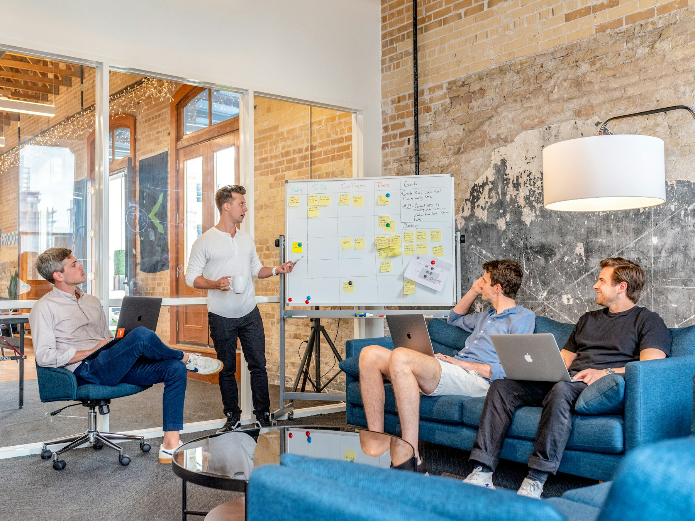

长期价值优先
招聘决策关注潜力与长期贡献，而不是只填补短期空缺。人才被期待为组织留下可复用的方法。
人才理念
招聘不是一个单向筛选动作。我们希望候选人清楚看见，未来三年可以在哪些项目中获得反馈、承担什么责任、通往哪一条路径。
招聘决策关注潜力与长期贡献，而不是只填补短期空缺。人才被期待为组织留下可复用的方法。
让人才在物业、商业、科技等不同业务中建立系统性视野，减少单一岗位带来的成长天花板。
新人从第一天接触实际业务，在导师支持与可承担风险中做真实判断，而不是只做模拟练习。
目标、反馈与晋升依据清晰呈现，减少模糊评价。员工知道下一步能力标准，也知道获得支持的路径。
雇主品牌
人才选择一家公司，不只是选择一份薪酬，更是选择未来三年会把时间交给怎样的环境。我们把雇主品牌建立在三个可见信号上：有反馈、有资源、有结果。
人才发展
面向应届毕业生与毕业三年内的高潜人才，通过“入局—深耕—领跑”三个时期，完成从校园到职业者的转换。培养不是延长试用期，而是提供一条清晰、可验证的成长路线。
完成业务全景学习、岗位导师匹配与基础技能营，从观察一次真实项目开始理解组织的协作方式。
在核心项目中独立负责一个模块，参与跨部门协作与季度复盘，并获得专业认证与外部课程支持。
发起关键任务提案，学习管理与影响力课程，通过轮岗拓宽业务视野，并进入下一阶段晋升评估。
员工福利
福利不应只回应极端情况，也应支持员工在日常工作、学习与生活中保持稳定。我们围绕时间、健康、学习和回报搭建支持体系。
核心时段协作与自主安排结合，支持混合办公、错峰通勤和个人事务协调。
年度体检、医疗保险、心理支持与家庭关怀方案，覆盖工作内外的重要时刻。
用于专业课程、认证、书籍与行业会议，支持个人把学习投入变成长期能力。
重要项目达成后，团队获得透明回报。贡献可以被讨论、被记录，也被合理认可。
年假、志愿服务假、考试假与个人事务假组合使用，让不同阶段的需求都有空间。
内部岗位优先开放，支持人才在业务城市间流动，让职业选择与生活选择一起被考虑。
员工故事
成长不一定发生在高光时刻。更多时候，它出现在一次被认真对待的提案、一次坦诚的复盘，或一次有人陪你把问题拆开的过程里。
“最意外的是，刚入职两个月就能把提案带上业务复盘。有人认真听，也有人给出非常具体的修改建议。”

“团队允许我带着一个没有成功的小项目复盘，而不是把它藏起来。那一次让我真正理解了长期价值。”
“我的导师没有替我做完，而是和我一起拆分问题。这种成长方法，三年后依然有效。”
开放岗位
按部门、岗位类型、工作经验与应届生机会快速缩小范围。每个岗位都写明了职责、期待与成长回报，帮助你判断这三年是否值得投入。
减少一个筛选条件，或尝试更短的关键词。
网页会把本次内容修改写入仓库内的 edits.json，GitHub Pages 随后自动发布。Token 不会写入网页文件。如果无法连接 GitHub API，请改用电脑上的 Chrome 或 Edge，不要使用内置预览浏览器。
按顺序操作即可。下载动作只会在你点击下方按钮后开始，不会被自动触发。
如果使用 Codex 内置预览标签页，下载可能被拦截。请改用桌面版 Chrome 或 Edge，在地址栏打开：https://steveliu787-prog.github.io/nwdrecruitment/